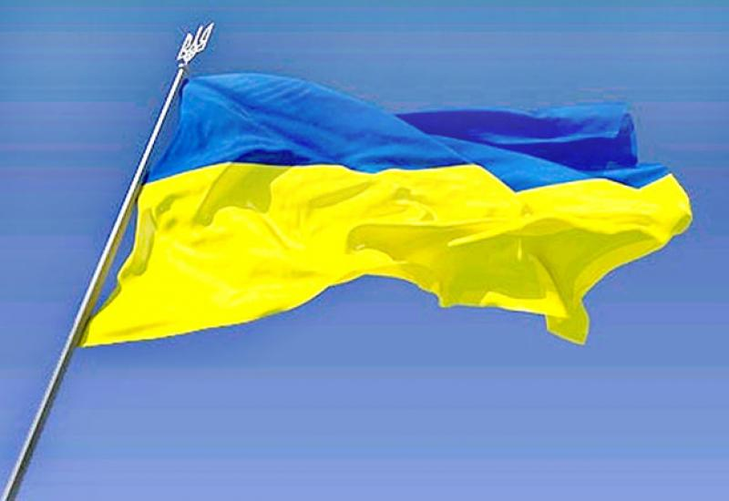

Війна України з рашею за свою незалежність.
Наша війна з сусідами-рашистами почалася задовго до 2022 року, й навіть до 2014 року
Ще з уроків історії ми знаємо, що вони ніколи не давали нам жити спокійно - це й українсько-расейський договір 1654 року, й знищення москальською ордою Гетьманщини, козацького стану, Січі, тотальна русифікація, знищення української державості. В 1918 розпочалася нова хвиля намагань москальщини знищити все українське. Це й заборона всього українського, й Голодомор, й найбільші втрати України в другій світовій війні...
В усі часи в Україні були люди, які боролися за її незалежність та процвітання, справою чи словом.
Українці, які прославили Україну
З давніх давен
-
Ярослав Мудрий
-
Богдан Хмельницький
-
Григорій Сковорода
-
Тарас Шевченко
Які боролися за Україну в 19-20 століттях
-
Роман Шухевич
-
Євген Коновалець
-
Степан Бандера
-
Михайло Грушевський
Видатні українці 20 - 21 столітть.
-
Вячеслав Чорновіл
-
Валерій Залужний
-
Ліна Костенко
Україна ніколи не забуде!
Воєнні злочини росіїМи ніколи не забудемо й не пробачить рашистам того, що вони скоїли на нашій землі:
й ні цього:
й цього також:
Але Україна все одно переможе!
Й над всіма нашими землями, навіть зараз тимчасово окупованими, обов'язково замайорить наш прапор!
Саме українці стали запорукою тієї підтримки, яку зараз отримує наша держава від міжнародних партнерів. Наша феноменальна здатність гуртуватися в найтяжчі часи разом з бажанням допомогти тим, хто того потребує, відстоювання своїх позицій та небажання підкорюватись сучасні українці, мабуть, отримали у спадок від наших славних пращурів.
Однак, ми знаємо і усвідомлюємо ціну Перемоги. Ми вдячні тим, хто нас боронить, і тим, хто віддав своє життя. Усім серцем віримо у Перемогу й деокупацію усіх тимчасово окупованих територій”.